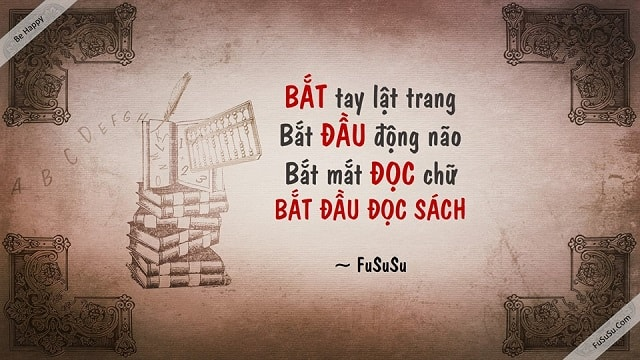
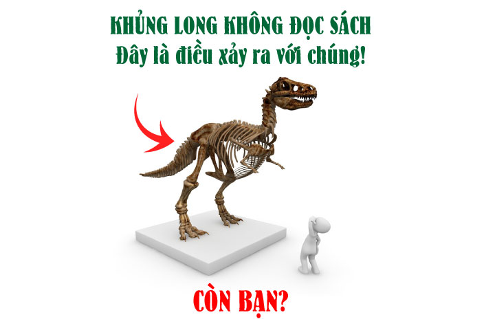
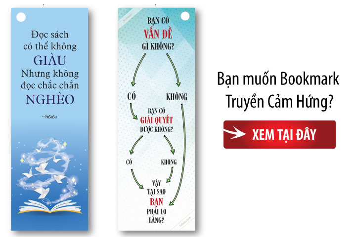

Tôi chia người đọc sách ra làm bốn loại. Một là những người cảm thấy có quá nhiều sách để đọc, họ đọc mãi không
hết. Hai là những người cảm thấy có quá nhiều trang để đọc, họ ít khi hoàn tất một cuốn. Ba là những người… cả
đời chả biết tới sách là gì. Bốn là những người biết cách đọc sách hiệu quả, và đây những gì tôi học từ họ.

Cách đọc sách hiệu quả #1 – BIẾT SÁCH –
Đọc sách cũng giống đầu tư, bạn phải bỏ tiền chính là thời gian (và tiền phụ để mua sách), lợi nhuận thu về là
tri thức bạn gặt hái, chúng có thể giúp bạn kiếm nhiều tiền hơn, hoặc tiết kiệm thời gian hơn khi làm việc gì
đó. Trước khi quyết định bỏ tiền cho dự án nào đó, các nhà đầu tư khôn ngoan đều phải nghiên cứu kĩ càng về nó.
Đọc sách hiệu quả cũng thế, bạn cần phải BIẾT SÁCH, tức là biết mình cần đọc sách gì, trước khi quyết định đầu
tư thời gian của mình. Vậy làm sao để BIẾT SÁCH nào cần đọc? Hầu hết mọi người thường coi đọc sách… là một mục
tiêu. Song thật không may, đó là một sai lầm lớn!

Sách cũng như con thuyền, nó là công cụ truyền kiến thức, giúp bạn thực hiện mục tiêu nào đó, chứ không phải mục
tiêu là… đọc sách. Do đó, thay vì nhảy ngay vào một mê cung để tìm sách hay, hãy xác định cho mình những mục
tiêu thú vị để thực hiện, và rồi sách hay sẽ tự xuất hiện. Lúc ấy, chỉ cần Google từ khoá “Sách hay về + { mục
tiêu của bạn }”. Chẳng hạn “Sách hay về kỹ năng giao tiếp”, “Sách hay về luyện trí nhớ”, v.v… hoặc đơn giản là
hỏi bạn bè, “Tớ muốn học tiếng Anh hiệu quả, cậu biết sách nào hay không?” họ sẽ giới thiệu cho bạn. Nếu thích
đoạn trên, bạn nên đọc thêm... Lập kế hoạch với bí mật PIN Khi bạn BIẾT SÁCH nào quan trọng cần đọc, thì tự
nhiên bạn sẽ loại bỏ được những cuốn không cần thiết, và tiết kiệm thời gian, tiền bạc. Khi bạn đọc những cuốn
sách phục vụ cho mục tiêu của mình, chắc chắn tỉ lệ hoàn tất cuốn sách cũng sẽ cao hơn, BIẾT SÁCH nào phục vụ
cho mục tiêu của mình, là cách đọc sách hiệu quả.
Cách đọc sách hiệu quả #2 – HIỂU SÁCH –
Mỗi cuốn sách hay là một cuộc đời, một kho kinh nghiệm được viết không chỉ một lần, mà có thể được viết đi viết
lại hàng trăm lần, trong nhiều năm. Bạn có thể dễ dàng đọc hết một cuốn sách hay trong 2 tiếng, song để HIỂU
SÁCH, để nắm bắt hết giá trị của nó thì có thể mất đến vài năm. Vậy cách đọc sách hiệu quả là gì?

Một cuốn sách hay cũng giống một món ăn ngon, nếu ăn quá nhanh, bạn sẽ khó mà thưởng thức. Song nếu ăn quá chậm,
món ăn sẽ bớt ngon, thậm chí ôi thiu, phải không? Nên bạn hãy… vừa ăn nhanh, vừa ăn chậm kết hợp. Tất nhiên,
chúng ta chỉ có thể làm điều này với sách, vì nó không thể ôi thiu, và đã hay, thì đọc lúc nào cũng hay. Ở lần
đầu tiên, cách đọc sách hiệu quả là bạn phải đọc càng nhanh càng tốt. Mục đích là… hoàn tất cuốn sách, và nắm
được tinh thần chung của nó. Sau đó nếu được, hãy vẽ một sơ đồ tư duy mô tả lại cấu trúc và những ý chính của
cuốn sách. Việc này giống như tạo ra một tấm bản đồ, giúp bạn không bị lạc trong sách. Sai lầm của hầu hết mọi
người là chỉ đọc sách ngấu nghiến trong một lần. Một người đọc sách hiệu quả hiểu rằng trí nhớ giống như một
tảng đá cứng, muốn khắc sâu một thứ gì đó, bạn phải đục đẽo nhiều lần. Nếu không thì dù sách hay tới mấy, cũng
chỉ giống như đổ ào nước lên bề mặt tảng đá mà thôi, chẳng có gì đọng lại. Do vậy, hãy đọc lại, và cách đọc sách
hiệu quả lúc này là đọc chậm thôi, chia ra mỗi ngày đọc một ít, liên tục trong vòng 1 – 2 tuần. Nước chảy đá
mòn, mục đích của lần đọc này là giúp kiến thức trong sách “thẩm thấu” dần dần vào não của bạn, và nếu trong
sách có phần thực hành, thì đây là lúc bạn làm nó (hoặc làm lại).
Cách đọc sách hiệu quả #3 – DÙNG SÁCH –
br
Đọc, đọc nữa, nhưng đừng… đọc mãi. Người ta lên thuyền để sang sông, sang được rồi thì bỏ thuyền lại, chứ đâu có
ai đội thuyền lên đầu đi tiếp? Sách giống như con thuyền, sau khi đọc hiểu, bạn phải tự bước tiếp, bạn phải DÙNG
SÁCH, phải áp dụng những gì bạn đã hiểu trong sách vào thực tiễn. Đó mới là cách đọc sách hiệu quả. Có những
cuốn sách mang tính thực hành cao, tác giả muốn bạn đọc tới đâu thực hành ngay tới đó. Có những cuốn đòi hỏi bạn
phải suy ngẫm, tự tìm ra cách vận dụng cho riêng mình. Dù thế nào, thì sau khi “nhai” mỗi chương, bạn vẫn nên
“nuốt” nó bằng cách rút ra một thứ gì đó để hành động. Rút ra thế nào? Hãy trả lời ba câu hỏi sau: Đọc xong
chương vừa rồi tôi đã biết thêm điều gì mới? Tôi đã có những suy nghĩ gì khác đi sau khi biết điều đó? Với suy
nghĩ khác đó, tôi sẽ hành động khác đi như thế nào? Mục đích của việc đọc sách là giúp bạn trở nên tốt hơn ở một
lãnh vực nào đó. Nên sau khi đọc xong, hãy tổng kết lại xem bạn đã có những suy nghĩ nào tích cực? Mình sẽ thực
hiện những hành động nào khác đi? Nếu bạn làm được điều đó, thì đã là một thành công lớn rồi!